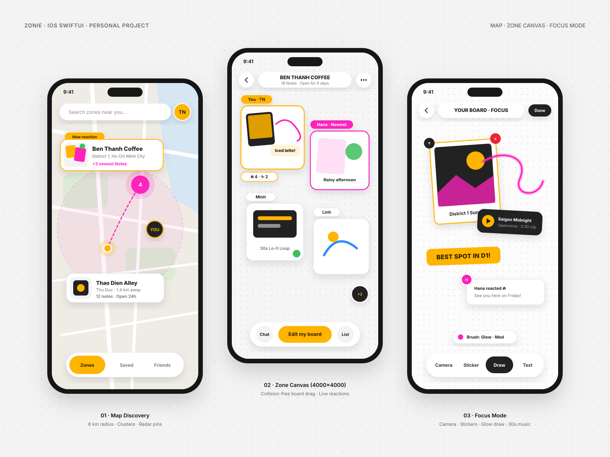
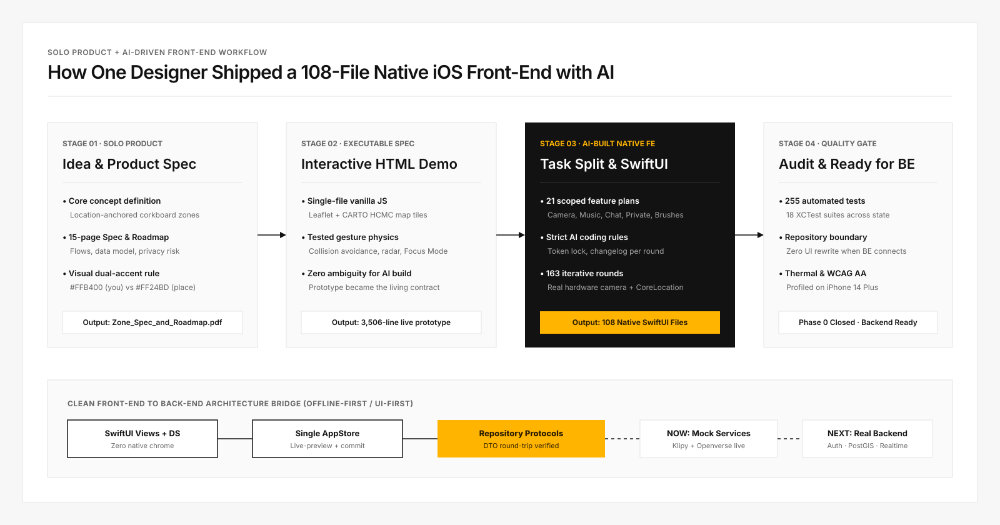
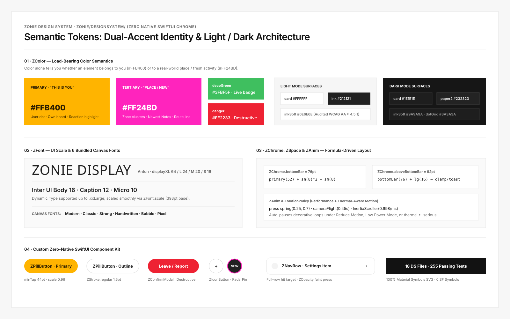
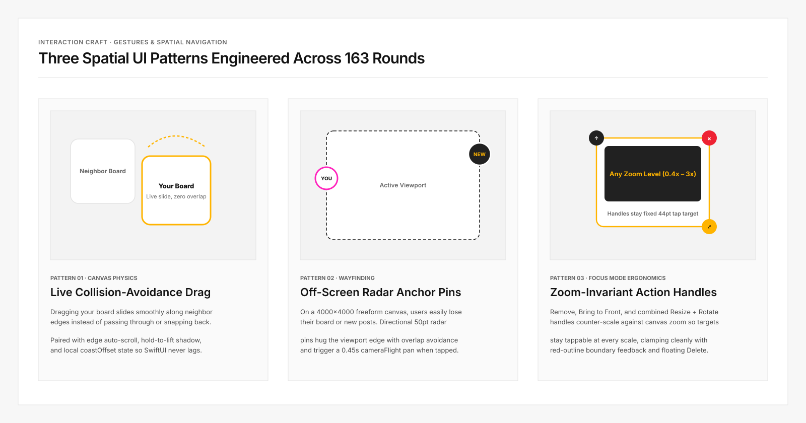

Personal Project · Solo Product & AI Front-end
From solo idea to a 108-file native iOS app built with AI.
Zonie is a location-based collaborative note-board app anchored to real-world places: coffee shops, alleys, and neighborhood corners. Working completely solo, I owned the entire journey from product concept, 15-page specification, visual design system, and interactive HTML prototype to breaking down tasks and building the entire native iOS SwiftUI front-end with AI across 163 iterative rounds.

Full native SwiftUI architecture with zero default iOS chrome and clean repo boundaries.
Structured task breakdowns, design token audits, and performance profiling.
Offline-first Phase 0 closed and verified ready for backend connection.
01 · Context
Leaving visual traces on real-world places.
Instead of a private notes tool or an endless global social feed, Zonie organizes creative expression around physical locations. Tap any spot on the map within your discovery radius to open a Zone: a shared dot-grid corkboard where each member owns a freeform square board.
Inside Focus Mode, users layer photos, live camera shots, animated stickers, 30-second music clips, 36 custom shapes, styled typography, and glow marker drawings, while visitors leave lightweight emoji and comment reactions.
100% Solo (Idea to Code)
Offline-First / UI-First
108 SwiftUI files · 255 tests
Phase 0 FE Complete
02 · Problem
Designing a spatial, gesture-heavy app without an engineering team.
Building an expressive spatial canvas solo posed both product-design challenges and AI-assisted engineering pitfalls.
Spatial disorientation on huge canvases
A 4000×4000 freeform board canvas plus a city map makes it easy for users to lose their own board, miss fresh activity, or collide awkwardly with neighbors.
Generic native chrome breaks playful identity
Default SwiftUI sheets, toggles, and SF Symbols felt sterile next to a tactile scrapbook aesthetic, yet custom UI demands strict token discipline.
AI code drifts fast without architecture rules
Prompting AI ad-hoc across dozens of features quickly causes hardcoded pixel drift, SwiftUI re-render lag, and dead code unless tasks and design tokens are strictly governed.
03 · My role
One person wearing Product, UX/UI, Design System, and FE Lead hats.
Product & Task Architecture
Authored the 15-page specification, location privacy threat model, backend transition plan, and 21 scoped feature plans guiding every AI build sprint.
Visual & Token Craft
Created Zonie's complete zero-native design system (ZColor Light/Dark WCAG AA, Anton + Inter typography, formula-based ZChrome, and Material Symbols SVG kit).
AI-Driven FE Execution
Built a 3,506-line standalone HTML prototype first to prove gesture physics, then directed AI through 163 documented rounds of native SwiftUI implementation and 255 tests.
04 · Approach
Spec first, prove physics in HTML, scale cleanly into SwiftUI.
The breakthrough in solo AI development was treating an interactive HTML prototype and strict markdown rules as the executable contract before touching Xcode.
Idea & PRD
Defined Zones, Boards, Focus Mode, privacy radius, and data model.
HTML Prototype
Built a single-file vanilla JS + Leaflet prototype to test drag and zoom feel.
Token Lock
Formalized ZColor, ZFont, ZSpace, ZRadius, and ZAnim so AI never invents literals.
Feature Plans
Broke complex features (Camera, Music, Chat, Private, Brushes) into 21 specs.
163 AI Rounds
Iterated SwiftUI features with strict changelog tracking and dead-code sweeps.
Audit & Tests
Profiled iPhone 14 Plus thermals, added ZMotionPolicy, and locked 255 tests.

05 · Zero-Native Design System & Token Governance
Color carries meaning, formulas prevent drift.
Zonie's visual language rests on a deliberate dual-accent split: Amber (#FFB400) always means 'this is you' (your map dot, your board, your unread reactions), while Magenta (#FF24BD) always means 'this is a place or fresh activity' (zone clusters, route arcs, Newest Notes). Every surface, elevation, and chrome offset lives in strict SwiftUI tokens audited for WCAG AA contrast.
| Token Group | Verified Values | Engineering & UX Purpose |
|---|---|---|
| ZColor (Light / Dark) | paper #F6F6F6 / #161616 · inkSoft #6E6E6E (≥4.5:1 AA) · primary #FFB400 · tertiary #FF24BD | Instant ownership vs location clarity across both themes with audited legibility. |
| ZFont & Canvas Type | Anton (displayXL 64 to S 16) · Inter UI (16/12/10) · 6 bundled canvas styles | Expressive headlines paired with Dynamic Type UI and offline-safe creative text. |
| ZChrome Formula | bottomBar = primary(52) + sm(8)*2 + sm(8) = 76pt · aboveBottomBar = 92pt | Eliminated three drifting hardcoded offsets across Map, Toast, and Focus pan clamps. |
| ZAnim & ZMotionPolicy | press spring(0.25, 0.7) · cameraFlight 0.45s · InertiaScroller 0.998/ms | Silky tactile gestures that auto-throttle decorative loops on Reduce Motion or thermal load. |

06 · Key solutions
High-craft spatial interactions built and verified end-to-end.
1. Three signature spatial mechanics that keep freeform fun.
Freeform canvases often feel chaotic on small phone screens. I engineered three interlocking UI mechanics across both the HTML prototype and native SwiftUI build: live collision-avoidance dragging (your board slides smoothly around neighbors instead of overlapping), 50pt off-screen radar anchor pins that guide you back to your board or Newest Notes with a 0.45s camera flight, and zoom-invariant action handles that keep Remove, Bring to Front, and combined Resize/Rotate comfortably tappable at every scale.

2. Rich creative toolkit with real hardware and live media.
Beyond basic stickers and text, Focus Mode evolved into a playful pocket studio: a custom AVFoundation Camera screen supporting photo, 10 to 60s video clips, and multi-photo grid layouts; live Klipy animated GIF stickers with synchronous snapshot baking; 30-second Openverse music clips; 36 custom shapes; and Pen, Marker, and Glow drawing brushes.
Socially, Zone Chat, Friend Code privacy controls, two-sided Reactions (with one-tap highlight jumps), and tiered zone lifecycles round out the full consumer experience.
3. UI-first architecture engineered for painless backend transition.
To avoid throwing away 108 files when moving online, Phase 0 introduced clean repository protocols, Data Transfer Objects (DTOs), and Keychain auth abstractions underneath the single AppStore.
When profiling revealed lag on iPhone 14 Plus during 100-board stress tests, diagnostic body counters pinpointed thumbnail bake re-renders; shifting gesture state into local coastOffset variables eliminated stutter and closed Phase 0 with 255 green tests.
07 · Trade-offs
Pragmatic solo decisions that kept momentum high.
Building a single-file HTML/JS prototype first looked like extra work, yet testing map discovery, radar pills, and drag collision in a browser saved weeks of trial-and-error in Xcode.
Deferring live servers, auth, and moderation until Phase 1 let me perfect every gesture, animation curve, and dark-mode token while isolating mock data behind clean repository protocols.
Replacing native sheets, toggles, and SF Symbols required strict design-token governance, giving Zonie unmistakable visual personality without sacrificing 44pt tap targets or Dynamic Type.
08 · Outcome
Complete Phase 0 native iOS front-end and live playable prototype.
- Designed and built 108 native SwiftUI source files across 163 documented rounds covering Map, Zone Canvas, Focus Mode, Camera, Zone Chat, Friends/Private mode, and Settings.
- Closed Phase 0 on 2026-10-03 with 255 passing unit tests across 18 test suites, audited WCAG AA Light/Dark tokens, thermal motion throttling, and zero unmapped wire fields.
- Produced complete backend transition, security/privacy threat model, and Android port documentation ready for Phase 1 engineering.
Try the original standalone interactive HTML prototype below: tap the map to create a zone, double-tap a board to enter Focus Mode, draw, or add stickers.
Live Interactive HTML Prototype
Play with the live Zonie HTML prototype.
This is the real interactive prototype created before the native SwiftUI build. Complete the quick welcome card or explore District 1 zones directly.
09 · Reflection
What I learned.
Designers who structure tasks well can ship real front-end with AI.
AI multiplies execution speed dramatically, but only when paired with unambiguous visual specs, locked design tokens, and disciplined verification after every round.
Live prototypes beat static handoff slides.
Feeling drag inertia, zoom clamping, and off-screen wayfinding firsthand exposed dozens of micro-UX flaws I would never have noticed on a static artboard.
Performance is part of UI craft.
Smooth 60fps canvas panning, thermal-aware motion throttling, and deterministic layout math matter just as much as color and typography.
Djaminn: Giving musicians a reason to come back and jam.